건축산업기사 (2018-03-04 기출문제)
1과목: 건축계획
1. 1주간 평균 수업시간이 35시간인 어느 학교에서 미술실의 사용 시간이 25시간이다. 미술실 사용 시간 중 20시간은 미술수업에 사용되며, 5시간이 학급토론수업에 사용된다면, 교실의 순수율은?
- 20%
- 29%
- 71%
- 80%
(정답률: 74%)

2. 사무소 건축의 엘리베이터 계획에 관한 설명으로 옳지 않은 것은?
- 군 관리운전의 경우 동일 군내의 서비스 층은 같게 한다.
- 승객의 층별 대기시간은 평균 운전간격 이하가 되게 한다.
- 교통수요량이 많은 경우는 출발기준층이 2개층 이상이 되도록 계획한다.
- 초고층，대규모 빌딩인 경우는 서비스 그룹을 분할(죠닝)하는 것을 검토한다.
(정답률: 73%)
3. 주택의 동선계획에 관한 설명으로 옳지 않은 것은?
- 개인, 사회, 가사노동권의 3개 동선은 서로 분리하는 것이 좋다.
- 동선상 교통량이 많은 공간은 서로 인접 배치하는 것이 좋다.
- 거실은 주택의 중심으로 모든 동선이 교차, 관통하도록 계획하는 것이 좋다.
- 화장실, 현관 등과 같이 사용빈도가 높은 공간은 동선을 짧게 처리하는 것이 좋다.
(정답률: 80%)
4. 백화점 건축에서 기둥 간격의 결정 시 고려할 사항과 가장 거리가 먼 것은?
- 공조실의 위치
- 매장 진열장의 치수
- 지하주차장의 주차방식
- 에스컬레이터의 배치방법
(정답률: 60%)
5. 공동주택의 단위세대 평면형식 중 LDK형에서 D가 의미하는 것은?
- 거실
- 부엌
- 식당
- 침실
(정답률: 83%)
6. 홀(hall)형 아파트에 관한 설명으로 옳지 않은 것은?
- 거주의 프라이버시가 높다.
- 대지의 이용률이 가장 높은 형식이다.
- 엘리베이터 홀에서 직접 각 세대로 접근할 수 있다.
- 각 세대에 양쪽 개구부를 계획할 수 있는 관계로 일조와 통풍이 양호하다.
(정답률: 71%)
7. 사무소 건축의 코어형식 중 중심코어형에 관한 설명으로 옳지 않은 것은?
- 외관이 획일적일 수 있다.
- 유효율이 높은 계획이 가능하다.
- 구조코어로서 바람직한 형식이다.
- 바닥면적이 큰 경우에는 사용할 수 없다.
(정답률: 81%)
8. 상점의 판매방식 중 측면판매에 관한 설명으로 옳지 않은 것은?
- 충동적 구매와 선택이 용이하다.
- 판매원의 정위치를 정하기 어렵고 불안정하다.
- 고객과 종업원이 진열상품을 같은 방향으로 보며 판매하는 방식이다.
- 진열면적은 감소하나 별도의 포장 공간을 둘 필요가 없다는 장점이 있다.
(정답률: 78%)
9. 학교건축에서 단층교사에 관한 설명으로 옳지 않은 것은?
- 재해시 피난이 용이하다.
- 학습활동의 실외 연장이 가능하다.
- 구조계획이 단순하며, 내진ㆍ내풍 구조가 용이하다.
- 집약적인 평면계획이 가능하나 채광ㆍ환기가 불리하다.
(정답률: 83%)
10. 사무소 건축의 화장실 계획에 관한 설명으로 옳지 않은 것은?
- 각 층마다 공통된 위치에 설치한다.
- 각 사무실에서 동선이 짧거나 간단하도록 한다.
- 가급적 계단실이나 엘리베이터 홀에 근접하여 계획한다.
- 1개소에 집중시키지 말고 2개소 이상으로 분산시켜 배치하도록 한다.
(정답률: 82%)
11. 표준화가 어렵거나 다종을 소량 생산하는 경우에 채용되는 공장의 레이아웃(lay out) 방식은?
- 고정식 레이아웃
- 혼성식 레이아웃
- 공정중심 레이아웃
- 제품중심 레이아웃
(정답률: 77%)
12. 주택 부엌의 작업대 배치 방식 중 L형 배치에 관한 설명으로 옳지 않은 것은?
- 정방형 부엌에 적합한 유형이다.
- 부엌과 식당을 겸하는 경우 활용이 가능하다.
- 작업대의 코너 부분에 개수대 또는 레인지를 설치하기 곤란하다.
- 분리형이라고도 하며, 모든 방향에서 작업대의 접근 및 이용이 가능하다.
(정답률: 74%)
13. 은행의 주출입구 계획에 관한 설명으로 옳지 않은 것은?
- 회전문 설치 시 안전성에 대한 고려가 필요하다.
- 고객을 내부로 자연스럽게 유도하는 것이 계획상 중요하다.
- 이중문을 설치할 경우, 바깥문은 안여닫이로 계획하여야 한다.
- 겨울철에 실내온도의 유지 및 바람막이를 위해 방풍실의 전실(前室)을 계획하는 것이 좋다.
(정답률: 71%)
14. 근린생활권 중 인보구의 중심시설은?
- 파출소
- 유치원
- 초등학교
- 어린이놀이터
(정답률: 80%)
15. 다음 중 공간의 레이아웃(lay out)과 가장 밀접한 관계를 가지고 있는 것은?
- 입면계획
- 동선계획
- 설비계획
- 색채계획
(정답률: 83%)
16. 주택의 각 부위별 치수계획으로 가장 부적절한 것은?
- 복도의 폭：120cm
- 현관의 폭：120cm
- 세면기의 높이：75cm
- 부엌의 작업대 높이：65cm
(정답률: 72%)
17. 다음 중 초등학교 저학년에 가장 적당한 학교운영방식은?
- 일반교실, 특별교실형(U＋V형)
- 교과교실형(V형)
- 종합교실형(U형)
- 플라툰형(P형)
(정답률: 88%)
18. 아파트 단지 내 주동배치 시 고려하여야 할 사항으로 옳지 않은 것은?
- 단지 내 커뮤니티가 자연스럽게 형성되도록 한다.
- 옥외주차장을 이용하여 충분한 오픈스페이스를 확보한다.
- 주동 배치계획에서 일조, 풍향, 방화 등에 유의해야 한다.
- 다양한 배치기법을 통하여 개성적인 생활공간으로서의 옥외공간이 되도록 한다.
(정답률: 70%)
19. 상점의 숍 프런트(shop front) 형식을 개방형, 폐쇄형, 혼합형으로 분류할 경우, 다음 중 일반적으로 개방형의 적용이 가장 곤란한 상점은?
- 서점
- 제과점
- 귀금속점
- 일용품점
(정답률: 83%)
20. 단독주택의 각 실 계획에 관한 설명으로 옳지 않은 것은?
- 거실은 남북방향으로 긴 것이 좋다.
- 욕실의 천장은 약간 경사지게 함이 좋다.
- 거실과 정원은 유기적으로 시각적 연결을 갖게 한다.
- 침실의 침대는 머리쪽에 창을 두지 않는 것이 좋다.
(정답률: 68%)
2과목: 건축시공
21. 목공사에서 건축연면적(m2)당 먹매김의 품이 가장 많이 소요되는 건축물은?
- 고급주택
- 학교
- 사무소
- 은행
(정답률: 76%)
22. 철골구조의 판보에 수직스티프너를 사용하는 경우는 어떤 힘에 저항하기 위함인가?
- 인장력
- 전단력
- 휨모멘트
- 압축력
(정답률: 59%)
23. 다음은 기성콘크리트 말뚝의 중심간격에 관한 기준이다. A와 B에 각각 들어갈 내용으로 옳은 것은?
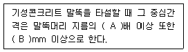
- A：1.5, B：650
- A：1.5, B：750
- A：2.5, B：650
- A：2.5, B：750
(정답률: 65%)
24. 가설공사 시 설치하는 벤치마크(Bench Mark)에 관한 설명으로 옳지 않은 것은?
- 건물 높이 및 위치의 기준이 되는 표식이다.
- 비，바람 또는 공사 중의 지반 침하，진동 등에 의해서 이동될 수 있는 곳은 피한다.
- 건물이 완성된 후에도 쉽게 확인할 수 있는 곳을 선정한다.
- 점검작업의 번잡을 피하기 위하여 가급적 한 장소에 설치한다.
(정답률: 76%)
25. 다음 미장공법 중 균열이 가장 적게 생기는 것은?
- 회반죽 바름
- 돌로마이트 플라스터 바름
- 경석고 플라스터 바름
- 시멘트 모르타르 바름
(정답률: 51%)
26. 조적조에서 테두리보를 설치하는 이유로 옳지 않은 것은?
- 횡력에 대한 수직균열을 방지하기 위하여
- 내력벽을 일체로 하여 하중을 균등히 분포시키기 위하여
- 지붕, 바닥 및 벽체의 하중을 내력벽에 전달하기 위하여
- 가로 철근의 끝을 정착시키기 위하여
(정답률: 59%)
27. 다음 중 유성페인트의 구성 성분으로 옳지 않은 것은?
- 안료
- 건성유
- 광명단
- 건조제
(정답률: 66%)
28. 현장타설 말뚝공법에 해당되지 않는 것은?
- 숏크리트 공법
- 리버스 서큘레이션 공법
- 어스드릴 공법
- 베노토 공법
(정답률: 45%)
29. 흙을 파낸 후 토량의 부피 변화가 가장 큰 것은?
- 모래
- 보통흙
- 점토
- 자갈
(정답률: 73%)
30. 콘크리트 골재에 요구되는 특성으로 옳지 않은 것은?
- 골재의 입형은 편평, 세장하거나 예각으로 된 것은 좋지 않다.
- 충분한 수분의 흡수를 위하여 굵은 골재의 공극률은 큰 것이 좋다.
- 골재의 강도는 경화 시멘트페이스트의 강도 이상이어야 한다.
- 입도는 조립에서 세립까지 균등히 혼합되게 한다.
(정답률: 71%)
31. 일반적인 일식도급 계약제도를 건축주의 입장에서 볼 때 그 장점과 거리가 먼 것은?
- 재도급된 금액이 원도급 금액보다 고가(高價)로 되므로 공사비가 상승한다.
- 계약 및 감독이 비교적 간단하다.
- 공사 시작 전 공사비를 정할 수 있으며 합리적으로 자금계획을 수립할 수 있다.
- 공사전체의 진척이 원활하다.
(정답률: 71%)
32. 콘크리트 거푸집을 조기에 제거하고 단시일에 소요강도를 내기 위한 양생 방법은?
- 습윤양생
- 전기양생
- 피막양생
- 증기양생
(정답률: 64%)
33. 콘크리트용 골재의 함수상태에서 유효흡수량을 옳게 설명한 것은?
- 표면건조내부포화상태와 절대건조상태의 수량의 차이
- 공기중에서의 건조상태와 표면건조내부포화 상태의 수량의 차이
- 습윤상태와 표면건조내부포화상태의 수량의 차이
- 습윤상태와 절대건조상태와의 수량의 차이
(정답률: 52%)
34. 방수공사에 관한 설명으로 옳지 않은 것은?
- 방수모르타르는 보통 모르타르에 비해 접착력이 부족한 편이다.
- 시멘트 액체방수는 면적이 넓은 경우 익스팬션조인트를 설치해야 한다.
- 아스팔트 방수층은 바닥，벽 모든 부분에 방수증 보호누름을 해야 한다.
- 스트레이트 아스팔트의 경우 신축이 좋고, 내구력이 좋아 옥외방수에도 사용 가능하다.
(정답률: 53%)
35. 고로시멘트의 특징이 아닌 것은?
- 건조수축이 현저하게 적다.
- 화학저항성이 높아 해수 등에 접하는 콘크리트에 적합하다.
- 수화열이 적어 매스콘크리트에 유리하다.
- 장기간 습윤보양이 필요하다.
(정답률: 47%)
36. 다음 공정표에서 종속관계에 관한 설명으로 옳지 않은 것은?
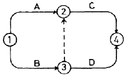
- C는 A작업에 종속된다.
- C는 B작업에 종속된다.
- D는 A작업에 종속된다.
- D는 B작업에 종속된다.
(정답률: 77%)
37. 아일랜드 컷 공법의 시공순서와 역순으로 흙파기를 하는 공법은?
- 케이슨 공법
- 타이 로드 공법
- 트렌치 컷 공법
- 오픈 컷 공법
(정답률: 74%)
38. 다음 중 기경성 재료에 해당하는 것은?
- 순석고 플라스터
- 혼합석고 플라스터
- 돌로마이트 플라스터
- 시멘트 모르타르
(정답률: 73%)
39. 재료를 섞고 몰드를 찍은 후 한번 구워 비스킷(biscuit)을 만든 후 유약을 바르고 다시 한번 구워낸 타일을 의미하는 것은?
- 내장타일
- 시유타일
- 무유타일
- 표면처리타일
(정답률: 72%)
40. 목구조의 2층 마루틀 중 복도 또는 간사이가 작을 때 보를 쓰지 않고 층도리와 간막이 도리에 직접 장선을 걸쳐 대고 그 위에 마루널을 깐 것은?
- 동바리마루틀
- 흩마루틀
- 보마루틀
- 짠마루틀
(정답률: 58%)
3과목: 건축구조
41. 그림과 같은 구조물의 판별로 옳은 것은?
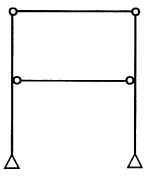
- 안정, 정정
- 안정, 1차 부정정
- 안정, 2차 부정정
- 불안정
(정답률: 51%)
42. 처짐을 계산하지 않는 경우 철근 콘크리트 보의 최소두께 규정으로 옳은 것은? (단, ℓ=보의 경간，wc=Mkg/m3, fy=MPa 사용)
- 단순지지：ℓ/15
- 양단연속：ℓ/24
- 1단연속：ℓ/18.5
- 캔틸레버：ℓ/10
(정답률: 52%)
43. 다음 구조물에서 A점의 휨모멘트 MA 의 크기는?
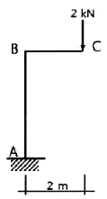
- 2kN∙m
- 4kN∙m
- 6kN∙m
- 8kN∙m
(정답률: 69%)
44. 기초의 부동침하를 방지하는데 적절하지 않은 조치는?
- 구조물 전체의 하중을 기초에 균등히 분포시킨다.
- 말뚝 또는 피어기초를 고려한다.
- 기초 상호간을 강(Rigid)접합으로 연결을 한다.
- 한 건물에서의 기초 설치 시 가급적 다른 종류의 기초로 한다.
(정답률: 74%)
45. 철근콘크리트구조에서 철근 가공 시 표준갈고리에 관한 설명으로 옳지 않은 것은?
- 주철근의 표준갈고리는 90°표준갈고리와 180°표준갈고리가 있다.
- 주철근의 90°표준갈고리는 구부린 끝에서 12db 이상 더 연장하여야 한다.
- 띠철근과 스터럽의 표준갈고리는 60°표준갈고리와 90°표준갈고리가 있다.
- D25 이하의 철근으로 135°표준갈고리를 만드는 경우, 구부린 끝에서 6db 이상 더 연장 하여야 한다.
(정답률: 49%)
46. 고정하중(D) 2kN/m2과 활하중(L) 3kN/m2이 구조물에 작용할 경우 계수하중(U)을 구하면? (단, 건축구조기준，일반건축물의 경우임)
- 6.0kN/m2
- 6.4kN/m2
- 6.8kN/m2
- 7.2kN/m2
(정답률: 56%)
47. 그림과 같은 구조물의 부재 C에 작용하는 압축력은?
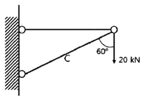
- 10kN
- 20kN
- 30kN
- 40kN
(정답률: 44%)
48. 그림에서 E점의 휨모멘트를 구하면?
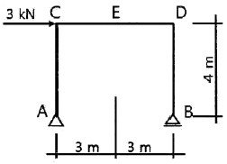
- 12kN∙m
- 6kN∙m
- 4kN∙m
- 3kN∙m
(정답률: 44%)
49. 그림의 트러스에서 a부재의 부재력은? (단，트러스를 구성하는 삼각형은 정삼각형임)
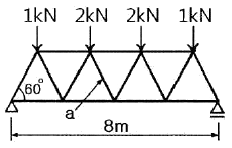
- 0
- 2kN
- 2√2kN
- √3kN
(정답률: 44%)
50. 강구조 접합부는 최소 얼마 이상을 지지하도록 설계되어야 하는가? (단，연결재, 새그로드 또는 띠장은 제외)
- 15kN
- 25kN
- 35kN
- 45kN
(정답률: 38%)
51. 그림과 같은 단면에서 허용휨응력도가 8MPa일 때 중심축(x-x)에 대한 휨모멘트 값은?
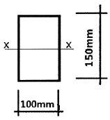
- 3kN∙m
- 4 kN∙m
- 8kN∙m
- 10kN∙m
(정답률: 33%)
52. 그림과 같은 지름 32mm의 원형막대에 40kN의 인장력이 작용할 때 부재단면에 발생하는 인장응력도는?
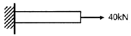
- 39.8MPa
- 49.8MPa
- 59.8MPa
- 69.8MPa
(정답률: 47%)
53. 건축구조별 특징에 관한 설명으로 옳지 않은 것은?
- 돌구조는 주요구조부를 석재를 써서 구성한 것으로 내구적이나 횡력에 약하다.
- 벽돌구조는 지진과 바람 같은 횡력에 약하고 균열이 생기기 쉽다.
- 철골철근콘크리트구조는 철골구조에 비해 내화성이 부족하다.
- 보강블록조는 블록의 빈 속에 철근을 배근하고 콘크리트를 채워 넣은 것이다.
(정답률: 72%)
54. 철근콘크리트보에서 철근과 콘크리트간의 부착력이 부족할 때 부착력을 증가시키는 방법으로서 가장 적절한 것은?
- 고강도철근을 사용한다.
- 콘크리트의 물시멘트비를 증가시킨다.
- 인장철근의 주장을 증가시킨다.
- 압축철근의 단면적을 증가시킨다.
(정답률: 40%)
55. 특수고력볼트인 T.S볼트를 구성하고 있는 요소와 거리가 먼 것은?
- 너트
- 핀테일
- 평와셔
- 필러플레이트
(정답률: 54%)
56. 콘크리트의 공칭전단강도(Vc)가 36kN이고, 전단보강근에 의한 공칭전단강도(Vs)가 24kN일 때 설계전단력(øVn)으로 옳은 것은?
- 45kN
- 51kN
- 56kN
- 60kN
(정답률: 33%)
57. 등분포 하중을 받는 단순보의 최대처짐공식으로 옳은 것은?
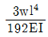
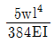
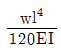
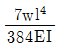
(정답률: 70%)
58. 다음 단면의 공칭 휨강도 Mn을 구하면? (단, fck=30MPa, fy=300MPa이다.)
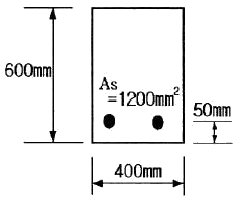
- 132.2kN∙m
- 160.5kN∙m
- 191.6kN∙m
- 222.2kN∙m
(정답률: 50%)
59. 구조물의 지점은 이동지점, 회전지점, 고정지점으로 구분되어진다. 각각의 지점에 대한 반력의 수로 알맞은 것은?
- 이동지점-1개，회전지점-2개, 고정지점-3개
- 이동지점-2개，회전지점-1개，고정지점-3개
- 이동지점-1개，회전지점-3개，고정지점-2개
- 이동지점-3개，회전지점-1개，고정지점-2개
(정답률: 72%)
60. 기초 크기 3.0m×3.0m의 독립기초가 축방향력 N＝60kN(기초자중 포함), 휨모멘트 M＝10kN∙m을 받을 때 기초 저면의 편심거리는 약 얼마인가?
- 0.10m
- 0.17m
- 0.21m
- 0.34m
(정답률: 47%)
4과목: 건축설비
61. 지름이 100mm인 관속을 통과하는 유체의 유량이 0.1m3/s인 경우, 이 유체의 유속은?
- 9.8m/s
- 10.7m/s
- 11.5m/s
- 12.7m/s
(정답률: 29%)
62. 전기실에 설치된 변압기 등의 발열량은 46.5kW이다. 32℃의 외기를 이용하여 전기실 실내를 40℃로 유지하고자 할 경우 도입해야 할 필요 외기량은? (단, 공기의 비열은 1.01kJ/kg∙K, 공기의 밀도는 1.2kg/m3이다.)
- 약 5000m3/h
- 약 17265m3/h
- 약 20834m3/h
- 약 25100m3/h
(정답률: 44%)
63. 옥내소화전설비에 관한 설명으로 옳은 것은?
- 송수구는 지면으로부터 높이가 0.5m 이상 1m 이하의 위치에 설치한다.
- 옥내소화전 노즐선단의 방수압력은 0.1MPa 이상이어야 한다.
- 수원은 그 저수량이 옥내소화전의 설치개수가 가장 많은 층의 설치개수에 1.3m3를 곱한양 이상이어야 한다.
- 옥내소화전용 펌프의 토출량은 옥내소화전이 가장 많이 설치된 층의 설치개수에 100L/min를 곱한 양 이상이어야 한다.
(정답률: 54%)
64. 인터폰설비의 통화망 구성 방식에 속하지 않는 것은?
- 상호식
- 복합식
- 모자식
- 연결식
(정답률: 58%)
65. 자동화재탐지설비의 감지기 중 감지기 주위의 공기가 일정한 농도의 연기를 포함하게 되면 동작하는 것은?
- 차동식
- 정온식
- 보상식
- 이온화식
(정답률: 60%)
66. 건축물의 냉방부하를 감소시키기 위한 유리창 계획으로 옳지 않은 것은?
- 유리창의 면적을 작게 한다.
- 반사율이 큰 유리를 사용한다.
- 차폐계수가 큰 유리를 사용한다.
- 열관류율이 작은 유리를 사용한다.
(정답률: 54%)
67. 루프통기의 효과를 높이는 역할과 함께 배수ㆍ통기 양 계통간의 공기의 유통을 원활히 하기 위해 설치하는 통기관은?
- 습통기관
- 도피통기관
- 각개통기관
- 공용통기관
(정답률: 55%)
68. 배수트랩의 봉수 파괴 원인에 속하지 않는 것은?
- 증발현상
- 통기관 설치
- 자기사이폰 작용
- 감압에 의한 흡입 작용
(정답률: 70%)
69. 급탕량의 산정방법에 속하지 않는 것은?
- 급탕단위에 의한 방법
- 사용인원수에 의한 방법
- 사용기구수에 의한 방법
- 피크로드 시간에 의한 방법
(정답률: 51%)
70. 다음 중 BOD 제거율[%]을 나타낸 식으로 올바른 것은?
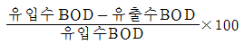
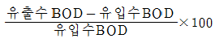
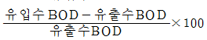
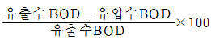
(정답률: 73%)
71. 펌프의 특성곡선에서 나타나지 않는 항목은?
- 효율
- 유속
- 양정
- 동력
(정답률: 45%)
72. 220[V], 400[W] 전열기를 110[V]에서 사용하였을 경우 소비전력[W]은?
- 50[W]
- 100[W]
- 200[W]
- 400[W]
(정답률: 49%)
73. 건축물에서 냉각탑을 설치하는 주된 목적은?
- 공기를 가습하기 위하여
- 공기의 흐름을 조절하기 위하여
- 오염된 공기를 세정시키기 위하여
- 냉동기의 응축열을 제거하기 위하여
(정답률: 74%)
74. 백열전구와 비교한 형광램프의 특징으로 옳지 않은 것은?
- 효율이 높다.
- 휘도가 낮다.
- 수명이 길다.
- 전원 전압의 변동에 대하여 광속 변동이 크다.
(정답률: 60%)
75. 습공기에 관한 설명으로 옳지 않은 것은?
- 건구온도가 낮아지면 비체적은 감소한다.
- 상대습도 100%인 경우 습구온도와 노점온도는 동일하다.
- 열수분비는 엔탈피의 변화량을 습구온도 변화량으로 나눈 값이다.
- 습공기를 가열하면 상대습도는 감소하나 절대 습도는 변하지 않는다.
(정답률: 36%)
76. 공기조화방식 중 2중덕트방식에 관한 설명으로 옳지 않은 것은?
- 혼합상자에서 소음과 진동이 생긴다.
- 부하특성이 다른 다수의 실이나 존에도 적용할 수 있다.
- 덕트 스페이스가 작으며 습도의 완벽한 조절이 용이하다.
- 냉ㆍ온풍의 혼합으로 인한 혼합손실이 있어서 에너지 소비량이 많다.
(정답률: 69%)
77. 소화설비 중 스프링클러설비에 관한 설명으로 옳지 않은 것은?
- 초기 화재 진압에 효과가 크다.
- 소화기능은 있으나 경보기능은 없다.
- 물로 인한 2차 피해가 발생할 수 있다.
- 고층 건축물이나 지하층의 소화에 적합하다.
(정답률: 65%)
78. 양수량이 2400L/min, 전양정 9m인 양수 펌프의 축동력은? (단, 펌프의 효율은 70%이다.)
- 4.53kW
- 5.04kW
- 6.35kW
- 7.14kW
(정답률: 54%)
79. 바닥복사난방에 관한 설명으로 옳지 않은 것은?
- 실내의 쾌적감이 높다.
- 바닥의 이용도가 높다.
- 방을 개방상태로 하여도 난방효과가 있다.
- 방열량 조절이 용이하여 간헐난방에 적합하다.
(정답률: 73%)
80. 증기난방의 응축수 환수방식 중 환수가 가장 원활하고 신속하게 이루어지는 것은?
- 진공식
- 기계식
- 중력식
- 복관식
(정답률: 45%)
5과목: 건축관계법규
81. 부설주차장 설치대상 시설물인 옥외수영장의 연면적이 15000m2, 정원이 1800명인 경우 설치해야 하는 부설 주차장의 최소 주차대수는?
- 75대
- 100대
- 120대
- 150대
(정답률: 48%)
82. 주차장에서 장애인전용 주차단위구획의 최소 크기는? (단, 평행주차형식 외의 경우)
- 너비 2.0m, 길이 3.6m
- 너비 2.3m, 길이 5.0m
- 너비 2.5m, 길이 5.1m
- 너비 3.3m, 길이 5.0m
(정답률: 67%)
83. 특별피난계단에 설치하는 배연설비의 구조에 관한 기준 내용으로 옳지 않은 것은?
- 배연구는 평상시에는 닫힌 상태를 유지할 것
- 배연구 및 배연풍도는 평상시에 사용하는 굴뚝에 연결할 것
- 배연구에 설치하는 수동개방장치 또는 자동 개방장치는 손으로도 열고 닫을 수 있도록 할 것
- 배연기는 배연구의 열림에 따라 자동적으로 작동하고, 충분한 공기배출 또는 가압능력이 있을 것
(정답률: 60%)
84. 건축법령상 초고층 건축물의 정의로 옳은 것은?
- 층수가 30층 이상이거나 높이가 90m 이상인 건축물
- 층수가 30층 이상이거나 높이가 120m 이상인 건축물
- 층수가 50층 이상이거나 높이가 150m 이상인 건축물
- 층수가 50층 이상이거나 높이가 200m 이상인 건축물
(정답률: 68%)
85. 각 층의 거실 바닥면적이 3000m2인 지하 3층 지상 12층의 숙박시설을 건축하고자 할 때, 설치하여야 하는 승용승강기의 최소 대수는? (단, 16인승 승용승강기를 설치하는 경우)
- 4대
- 5대
- 9대
- 10대
(정답률: 53%)
86. 지역의 환경을 쾌적하게 조성하기 위하여 대통령령으로 정하는 용도와 규모의 건축물에 일반이 사용할 수 있도록 대통령령으로 정하는 기준에 따라 소규모 휴식시설 등의 공개 공지 또는 공개 공간을 설치하여야 하는 대상 지역에 속하지 않는 것은?
- 준주거지역
- 준공업지역
- 보전녹지지역
- 일반주거지역
(정답률: 52%)
87. 건축법령상 의료시설에 속하지 않는 것은?
- 치과의원
- 한방병원
- 요양병원
- 마약진료소
(정답률: 65%)
88. 자연녹지지역 안에서 건축할 수 있는 건축물의 용도에 속하지 않는 것은?
- 아파트
- 운동시설
- 노유자시설
- 제1종 근린생활시설
(정답률: 74%)
89. 다음은 주차전용건죽물에 관한 기준 내용이다. ( )안에 속하지 않는 건축물의 용도는?
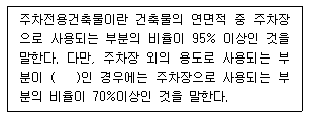
- 단독주택
- 종교시설
- 교육연구시설
- 문화 및 집회시설
(정답률: 51%)
90. 다음은 건축물이 있는 대지의 분할 제한에 관한 기준 내용이다. 밑줄 친 대통령령으로 정하는 범위 내용으로 옳지 않은 것은?
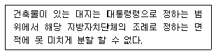
- 주거지역：50m2 이상
- 상업지역：150m2 이상
- 공업지역：150m2 이상
- 녹지지역：200m2 이상
(정답률: 55%)
91. 다음은 건축법령상 건축물의 점검 결과 보고에 관한 기준 내용이다. ( )안에 알맞은 것은?
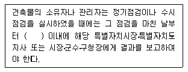
- 10일
- 14일
- 30일
- 60일
(정답률: 64%)
92. 종교시설의 용도에 쓰이는 건축물에서 집회실의 반자 높이는 최소 얼마 이상으로 하여야 하는가? (단, 집회실의 바닥면적은 300m2이며, 기계환기 장치를 설치하지 않은 경우)
- 2.1m
- 2.4m
- 3.3m
- 4.0m
(정답률: 54%)
93. 연면적 200m2을 초과하는 건축물에 설치하는 계단에 관한 기준 내용으로 옳지 않은 것은?
- 높이 3m를 넘는 계단에는 높이 3m 이내마다 너비 120cm 이상의 계단참을 설치하여야 한다.
- 높이가 1m를 넘는 계단 및 계단참의 양옆에는 난간(벽 또는 이에 대치되는 것을 포함)을 설치하여야 한다.
- 판매시설의 용도에 쓰이는 건축물의 계단인 경우에는 계단 및 계단참의 너비를 120cm 이상으로 하여야 한다.
- 계단의 유효높이(계단의 바닥 마감면부터 상부 구조체의 하부 마감면까지의 연직방향의 높이)는 1.8m 이상으로 하여야 한다.
(정답률: 55%)
94. 공동주택 중 아파트로서 4층 이상인 층의 각 세대가 2개 이상의 직통계단을 사용할 수 없는 경우 발코니에 설치하는 대피공간이 갖추어야 할 요건으로 옳지 않은 것은?
- 대피공간은 바깥의 공기와 접하지 않을 것
- 대피공간은 실내의 다른 부분과 방화구획으로 구획될 것
- 대피공간의 바닥면적은 각 세대별로 설치하는 경우에는 2m2 이상일 것
- 대피공간의 바닥면적은 인접 세대와 공동으로 설치하는 경우에는 3m2 이상일 것
(정답률: 65%)
95. 건축물의 건축 시 설계자가 건축물에 대한 구조의 안전을 확인하는 경우 건축구조기술사의 협력을 받아야 하는 대상 건축물에 속하지 않는 것은?
- 특수구조 건축물
- 다중이용 건축물
- 준다중이용 건축물
- 층수가 5층인 건축물
(정답률: 65%)
96. 다음 중 노외주차장에 설치하여야 하는 차로의 최소 너비가 가장 작은 주차형식은? (단, 이륜자동차전용 외의 노외주차장으로 출입구가 2개 이상인 경우)
- 직각주차
- 교차주차
- 평 행주차
- 60도 대향주차
(정답률: 65%)
97. 건축허가 대상 건축물이라 하더라도 미리 특별자치시장ㆍ특별자치도지사 또는 시장ㆍ군수ㆍ구청장에게 국토교통부령으로 정하는 바에 따라 신고를 하면 건축허가를 받은 것으로 보는 경우에 속하지 않는 것은?
- 층수가 2층인 건축물에서 바닥면적의 합계 50m2의 증축
- 층수가 2층인 건축물에서 바닥면적의 합계 60m2의 개축
- 층수가 2층인 건축물에서 바닥면적의 합계 80m2의 재축
- 연면적이 300m2이고 층수가 3층인 건축물의 대수선
(정답률: 68%)
98. 주거지역의 세분으로 저층주택을 중심으로 편리한 주거환경을 조성하기 위하여 지정하는 지역은?
- 제1종전용주거지역
- 제2종전용주거지역
- 제1종일반주거지역
- 제2종일반주거지역
(정답률: 50%)
99. 문화 및 집회시설 중 공연장의 관람석과 접하는 복도의 유효너비는 최소 얼마 이상으로 하여야 하는가? (단, 당해 층의 바닥면적의 합계가 400m2인 경우)
- 1.2m
- 1.5m
- 1.8m
- 2.4m
(정답률: 33%)
100. 태양열을 주된 에너지원으로 이용하는 주택의 건축면적 산정의 기준이 되는 것은?
- 건축물 외벽의 중심선
- 건축물 외벽의 외측 외곽선
- 건축물 외벽 중 내측 내력벽의 중심선
- 건축물 외벽 중 외측 비내력벽의 중심선
(정답률: 62%)
20 ÷ 25 = 0.8
즉, 미술실 사용 시간 중 미술수업에 사용되는 비율은 0.8 또는 80%이므로 정답은 "80%"이다.